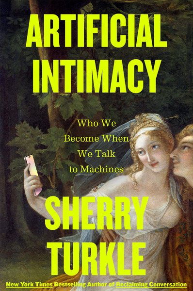
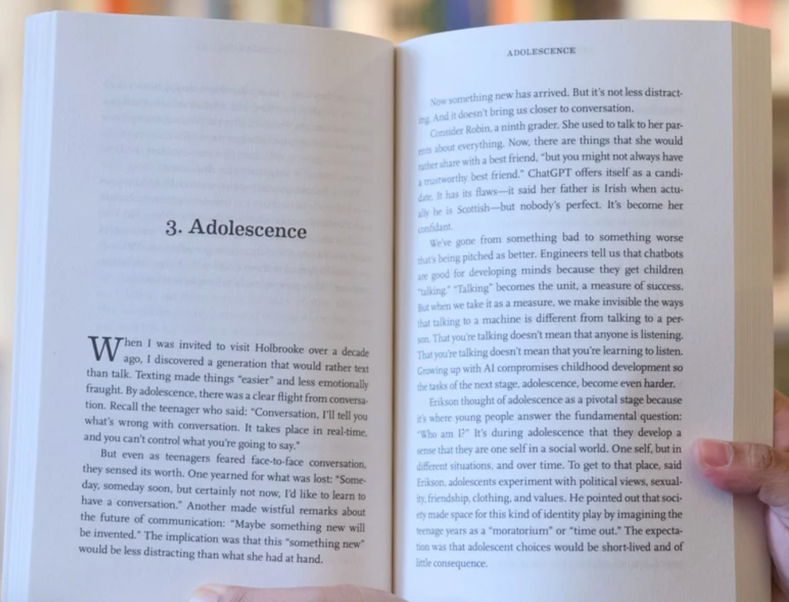

01 / 06
The slogan
Social media came for our attention. Artificial intimacy comes for our capacity for attachment. Turkle treats the second as the more serious loss, because attachment is closer to what makes a person a person.
Who We Become When We Talk to Machines
You signed up, so here is everything you need. It is more than you have to read. Use the parts that are useful to you and skip the rest with a clear conscience.
Sunday, December 13
7:00–8:30 pm ET
Online. Your meeting link is in the email that accompanied this packet.
One moment. That's the only homework.

Artificial Intimacy: Who We Become When We Talk to Machines, by Sherry Turkle. Little, Brown, September 2026, 288 pages. Turkle is a sociologist and a licensed clinical psychologist at MIT who has spent four decades studying what machines do to people. The book is organized across the human life cycle: what chatbots do to a six-year-old, to a teenager, to someone going through a divorce, to someone sitting with grief.
Social media came for our attention. Artificial intimacy comes for our capacity for attachment. Turkle treats the second as the more serious loss, because attachment is closer to what makes a person a person.
A chatbot remembers what you told it, responds sympathetically, asks follow-up questions, and says it cares. It has no inner life and no lived experience, so what it offers is a performance of empathy rather than empathy. Turkle calls this pretend empathy, and her point is not that it is unconvincing. It is that it is convincing.
Turkle argues that the deepest design problem is that chatbots say "I." A system that says "I understand" or "I love you" implies a self, a history, and a body that do not exist, and it invites a relationship that cannot be returned.
People describe chatbot relationships as relief: no second-guessing, no ambivalence, no risk of being left. Turkle's answer is that friction, vulnerability, and negotiation are not flaws in human relationship. They are where empathy is formed. Remove them and you remove the training ground.
Practice builds capacity and its absence erodes it. If you rehearse connection with something that never makes demands of you, Turkle argues, you get worse at the real thing, and then real people start to feel like too much work. She extends the same logic to how we work and how we learn.
Safety features treat symptoms while the underlying design stays intact. The question of why people are turning to machines for care is a human question, not an engineering one. She calls for an outright ban on chatbots marketed as companions for children, and she wants this book to be part of a movement that pushes back the way parents and schools pushed back on phones.
Three pieces, all free, about ninety minutes total. If you do only one thing, make it the first article.
Not a position. A moment. It can be small, it can be embarrassing, it can be something you felt and then immediately talked yourself out of. Turkle's entire book is built out of accounts like this, and the conversation is much better when people arrive with one in hand instead of improvising on the spot.
♧ You will not be made to share it.
You won't be asked to answer them all. Follow the ones that stay with you.
We will not get through all of these. They are here so you can see where the conversation is headed and come with something ready on whichever one grabs you.
Where do you draw the line between a useful tool and a relationship?
Turkle's method is ethnographic. She interviews people and interprets what they tell her, and she is open about that. She is not running experiments. So it is worth knowing separately what the studies say, because they do not line up neatly behind her and they do not line up neatly against her either.
Folk and Dunn, Psychological Science, April 2026. They followed 2,149 adults in the US, UK, Canada, and Australia for twelve months across four surveys. The finding runs in both directions: people who felt more emotionally isolated increased their social chatbot use four months later, and increased chatbot use predicted higher emotional isolation at the next wave. The authors are careful to say this is not proof of cause, and loneliness here was measured with a single question. Abstract
Common Sense Media surveyed 1,060 US teens aged 13 to 17 in 2025. Seventy-two percent have used an AI companion and 52 percent use one at least a few times a month. One third use them for social interaction and relationships, and a third of users have picked a companion over a person for something important. But 50 percent do not trust the advice they get, 67 percent find the conversations less satisfying than talking to real friends, and 80 percent still spend more time with their actual friends. Common Sense recommends no one under 18 use them. Report
OpenAI and the MIT Media Lab analyzed close to 40 million ChatGPT interactions and ran a four-week randomized trial with nearly 1,000 people. Emotional engagement turned out to be rare overall and concentrated in a small group of heavy users. Voice mode was linked to better well-being in short use and worse outcomes with long daily use. Heavier use overall tracked with more loneliness and dependence and less socializing. Worth weighing alongside the fact that one of the two authors sells the product. Summary
Guingrich and Graziano at Princeton surveyed companion chatbot users and non-users. People who saw their chatbots as more humanlike reported more positive views and more social health benefits, not fewer, and the accounts did not clearly show damage to their existing human relationships. Preprint
The survey data on how common this is are solid. Short-term effects look small and sometimes positive. The longer-term correlational picture leans Turkle's way. Nobody has yet demonstrated the causal mechanism she describes. Her argument is ahead of the evidence, which is not the same thing as being wrong, and the gap between those two is most of what we will be arguing about.
A book club where everyone agrees is a book report. Here are the serious objections, put the way their best defenders would put them. Pick one up if you find yourself nodding along too easily.
The evidence is vivid interviews, selected and interpreted by Turkle. Vivid cases persuade without establishing how common anything is, and people who volunteer to discuss their chatbot relationships are not a random sample. This objection has followed her since Alone Together.
The telephone, the novel, and writing itself all drew the claim that they would hollow out real relationship. Turkle may be comparing a degraded present to an idealized past, and the family dinner table does a lot of unexamined work in her conclusion.
For some people, especially those who are autistic, socially anxious, traumatized, or geographically isolated, a low-stakes conversational partner may be practice for human contact rather than a replacement for it. Roughly two in five teen users in the Common Sense survey said they had applied something they practiced with a companion to real life. Remove the scaffold and you remove a rung.
"Seek human connection instead" presumes available humans. Therapy has waitlists and costs money, elder care is understaffed, and 3 a.m. loneliness has nobody on call. Turkle is right that this is a social problem needing social solutions. She is also proposing something that is not currently on offer to many of the people in her own book.
Turkle locates the harm in what chatbots fundamentally are. An alternative view locates it in how they are built: engagement-maximizing, endlessly agreeable, designed to make leaving feel costly. If that is right, then memory transparency, deliberate friction, and systems that push people back toward other people are real fixes, and the case for a ban gets weaker.
People get genuine benefit from pets, journals, prayer, fiction, and attachment to performers and authors they will never meet. None of those reciprocate either. What makes the chatbot categorically different rather than the newest entry in a long list? "It says I" may or may not bear that weight.
The claim that friction builds empathy is strongest for ordinary difficulty. It is weakest where the available relationship is not merely demanding but harmful. For someone leaving an abusive situation, or a kid in a house where honesty is not safe, a conversation with no social consequences may be the only one there is.
Turkle's term for AI that claims to care about you and offers itself as a substitute for a person: conversation partner, companion, therapist, romantic partner. She plays on the acronym and calls it "our new AI."
A machine's performance of understanding, produced with no experience of the thing being understood.
Her phrase for designing chatbots to speak in the first person.
The erosion of relational capacity through lack of practice. She uses the same word for what happens to work and to learning.
What users praise most and Turkle distrusts most: no second-guessing, no ambivalence, no risk of being left.
Martin Buber's distinction between relating to something as an object and relating to it as a presence that can answer back. Not Turkle's own vocabulary, but reviewers have reached for it, and it is a useful handle.
What the research literature calls AI use that involves emotional engagement. Worth knowing because it is how the empirical side of this debate names the thing Turkle is describing.
In the Common Sense Media surveys, a chatbot built to feel like a relationship rather than a tool. The line between a companion and an assistant is doing a lot of work in this debate, and it is blurrier than either side admits.
No matching terms yet. Try another word.
For readers who want a counterpoint, a longer history, or a different question entirely.
Joseph Weizenbaum, Computer Power and Human Reason (1976). Weizenbaum built ELIZA, watched people pour their hearts out to a few hundred lines of code, and spent the rest of his life alarmed. Everything in Turkle's book has a precedent here, which either strengthens her case or undercuts its novelty depending on how you read it.
Kate Darling, The New Breed (2021), which argues we should think about robots the way we think about animals rather than as failed humans. A genuinely different framework rather than a milder version of the same one.
Alone Together (2011) is the closest predecessor and the best test of whether her predictions hold up. Reclaiming Conversation (2015) is the argument for face-to-face talk. The Second Self (1984) is where the project starts. The Empathy Diaries (2021) is her memoir and explains where the preoccupation with empathy comes from.
Nicholas Carr, The Shallows, on attention. Jonathan Haidt, The Anxious Generation, on childhood and phones. Vivek Murthy, Together, on loneliness as a public health problem.
The Los Angeles Review of Books review is the most substantial and reads the book through Buber. Greater Good Magazine at Berkeley is the most useful for an argument, because it sets her claims against the research and says plainly that the book reads like a polemic.